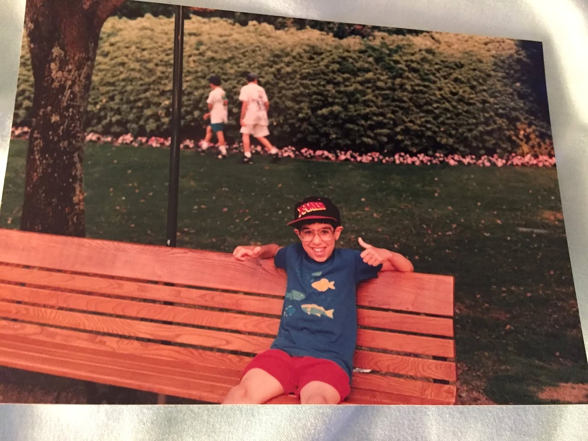
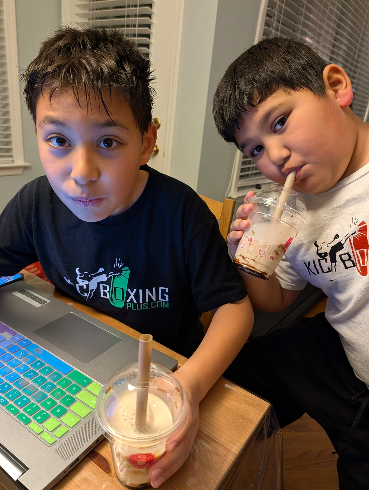
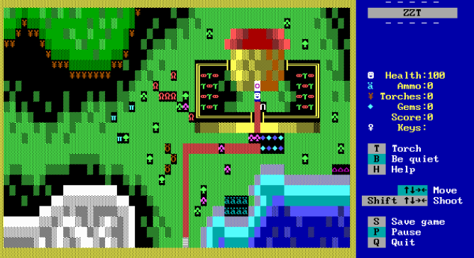

My Career
in Code.
Two decades of bugs, breakthroughs, late-night pages, and the lessons I wish someone had told me when I was your age.
Once upon a time, I was your age.
And now my kids go to Indian Hill — just like you.


I started coding when I was 6.

ZZT-OOP · 1991
A game-making language built into a tiny game called ZZT. I was 6 or 7. I didn't even know it was "coding" — I just wanted to build my own levels.
// nobody taught me. I just kept poking at it. Same way you figure out a new video game.
WHAT???
So... what do I actually do for a job? Let's guess together.
Mission Impossible music plays. I rappel from the ceiling. I steal data. Motorcycle chase. Everything explodes behind me as I escape.
Hooded developer. Dark room. Glowing monitors. Mysterious code only I understand. Drinks coffee at 2am.
"Have you tried turning it off and on again?" Headset on, all day. Answering the phone, fixing computer problems.
One-on-one tech help. "Click the icon, grandma. Yes, that one. No, the OTHER one."
Honestly? A little bit of everything.
But there's one thing I do that matters more than all of those...
The Drawing Telephone Game.
A.k.a. how image AI actually works.
> This is EXACTLY what image AI does — text becomes picture becomes text becomes picture.
What I REALLY do: help people.
Helping others
Figuring out what a business actually needs.
Explaining things
Translating between people and computers.
The code is the easy part. The hard part is figuring out what to build and explaining it to everyone else.
Websites. Like this one.
(desktop)
(mobile)
Same site — re-arranges itself so it works on any screen.
This is what bad looks like.
(desktop — ok)
squished site
can't read it
Looks the same on every screen — which means it's unusable on most of them.
What apps do you use every day?
(Open conversation — let them shout out apps. Bonus points: ask which ONE they couldn't live without.)
Games. What are you playing?
(Real talk: every single one of those games is built by software developers like me.)
And tools.
ChatGPT and Gemini? Those are just tools too. Made by software developers. We're about to talk a LOT about them.
Let me tell you what I do for them.
Three things, mostly: catch bad guys, follow rules, keep things running.
Fraud
People try to steal from AT&T customers. My team builds software that catches them — like a teacher catching a kid sneaking notes in a test, but at the speed of millions per second.
Compliance
Rules. Lots of rules. No passwords in our code. Software has to be up to date. We hire people whose entire job is to TRY to hack us, just to make sure they can't. Boring — until it isn't.
Keeping it up
If AT&T's stuff breaks at 3am... my phone rings. I get out of bed. I'm grumpy. I fix it. (This is the part of the job I'd skip if I could.)
AI.
Quick question for the room...
You said "Artificial Intelligence?" WRONG.
It stands for Apples & Ice Cream. Two flavors that have changed the world.
But what about GPT?
As in Chat-GPT — the one your big sibling uses for homework.
And yes — AI does stand for Artificial Intelligence. You were right.
AI is 75 years old.
The Turing Test: if a computer can fool you into thinking it's a human... is it thinking?
Step 1: Show it lots of cats.
Thousands of cat pictures. AI learns like a kid — show, don't tell.
Step 2: Find the patterns.
+ pointy ears
+ whiskers
+ furry body
+ cute little nose
"Hmm, I keep seeing these same things..."
Step 3: "Is this a cat?"
AI: "Pointy ears? check. Whiskers? check. Furry? check."
YES. This is a cat.
That's machine learning. The more examples we give it, the smarter it gets.
Glorified
Pattern Recognition.
Go home and tell your family: AI is just really good at spotting patterns. And getting really good at faking thinking.
AI is just really good at finishing sentences.
ChatGPT does this. Over. And over. One word at a time. Until you have a whole story.
Let's make a song.
Using a website called Suno.
Class shouts ideas. Pick the funniest. Type it in. Listen.
(Requires internet. If wifi is dead — skip and go to the story.)
Now YOU are the prompt.
> gpt-4o-mini is writing... ...
> image AI is warming up the paint brushes...
(usually 5-15 seconds)
Real talk: what about jobs?
Your parents might be talking about this at the dinner table.
The honest part
Some jobs ARE going away. Big companies are cutting people. AI does some things faster and cheaper than humans.
The hopeful part
Every time tech changes, jobs CHANGE — they don't disappear. (Ever heard of an elevator operator? A milkman? A switchboard lady?)
The kids who learn to USE AI — instead of being afraid of it — win.
Want to learn more?
Code Ninja
Coding classes for kids, after school
iCode
Summer camps. Where my kids learned.
YouTube
Free coding tutorials for any topic
shouldcallpaul.com
My site. Workshops, blog, more.
Tell your parents about me.
I run workshops on AI, public speaking, and more. If your parent or teacher wants a class like this one, send them my way.
shouldcallpaul
.com
scan me
Should
Call Paul.
Questions?
> paul@shouldcallpaul.com